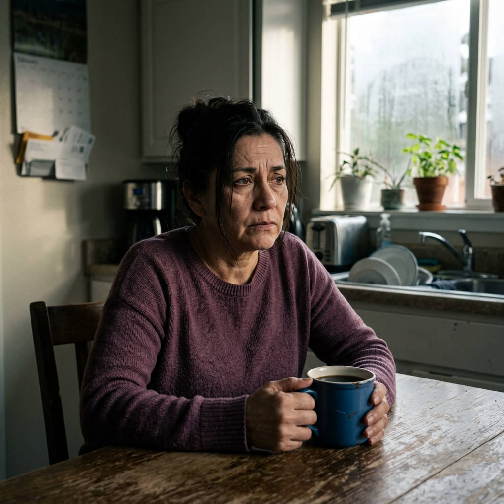

Pensaba que el cansancio era parte natural de envejecer. La verdad estaba escondida en un órgano que nadie le había mencionado.

Gloria tenía 52 años, tres hijos adultos y una vida que, desde afuera, parecía ordenada y tranquila. Pero cada mañana era una batalla silenciosa. Se levantaba con el mismo agotamiento con el que se había acostado. El café ya no funcionaba. La barriga, inflada desde el desayuno, le incomodaba todo el día. Y esa "niebla mental" que la hacía olvidar palabras o perder el hilo de las conversaciones la avergonzaba cada vez más.
"Pensé que era la menopausia. O la edad. Me decían: 'Es normal después de los 50'." Pero Gloria no lo aceptaba como normal. Algo en ella sabía que no era así.
"Sentía que mi cuerpo se estaba apagando lentamente. Y lo más aterrador era que nadie a mi alrededor lo notaba."
— Gloria, 52 añosLo que Gloria no sabía era que detrás de su agotamiento, de su vientre inflado y de esa piel cada vez más apagada, había un órgano trabajando al límite. Un órgano que nadie — ni su médico de cabecera, ni la nutrióloga que visitó dos años antes — le había mencionado jamás.
Lo que Gloria vivía no era exclusivo de ella. Según especialistas en medicina funcional, millones de personas mayores de 45 años conviven diariamente con señales que su cuerpo lleva años enviando — y que suelen confundirse con el simple paso del tiempo:
Estos síntomas, especialmente cuando aparecen juntos después de los 45, pueden ser señal de que el hígado está sobrecargado de grasa visceral acumulada. No porque la persona haga algo mal — sino porque el metabolismo cambia con la edad y el órgano necesita apoyo específico para seguir funcionando correctamente.
Era pasada la medianoche. Gloria no podía dormir por la presión abdominal. Abrió su tableta y comenzó a buscar respuestas — no en foros de dietas, sino en estudios sobre por qué el cuerpo no responde al descanso después de cierta edad.
Lo que encontró cambió su perspectiva completamente.
El hígado — ese órgano que filtra más de 500 funciones en el cuerpo — es especialmente vulnerable a la acumulación de grasa después de los 45 años. Cuando está congestionado, no puede procesar toxinas con eficiencia. El resultado: fatiga crónica, inflamación persistente, metabolismo lento y esa sensación de que el cuerpo "ya no responde como antes".
"Fue como encender una luz en un cuarto oscuro. Todos los síntomas tenían un solo origen. Y nadie me lo había explicado en 7 años de consultas."
— Gloria, sobre su descubrimientoLo más relevante de su investigación fue esto: el hígado, a diferencia de otros órganos, tiene una capacidad de recuperación extraordinaria — si se le dan los nutrientes correctos en el momento adecuado. El problema es que la mayoría de las personas espera a tener síntomas graves antes de actuar.
El hígado graso avanza sin dolor en sus primeras etapas. Esta es la progresión que los especialistas describen:
La grasa comienza a rodear las células hepáticas. Aparece la fatiga después de comer, el vientre inflado y el sueño no reparador. Muchos lo atribuyen al estrés o la edad.
El órgano se inflama intentando repararse. El metabolismo se hace más lento, el peso se acumula en el abdomen y el colesterol empieza a desregularse.
Las células forman tejido cicatricial (fibrosis). El daño se vuelve difícil de revertir y el riesgo de complicaciones serias aumenta significativamente. Esta fase puede tardar años en manifestarse con síntomas claros.
Gloria no buscaba una dieta restrictiva. A su edad, ya había probado suficientes. Lo que encontró fue diferente: un protocolo de 7 días basado en alimentos específicos que trabajan de forma sinérgica para desinflamar el tejido hepático y eliminar la grasa visceral acumulada.
No era una moda. Era nutrición aplicada con un propósito concreto.
El plan organizaba cada comida del día con una función específica para el hígado: activar el drenaje de toxinas por la mañana, evitar los picos de insulina al mediodía y, por la noche, estimular la quema de grasa visceral durante el sueño.
Tres momentos estratégicos del día para el hígado
Activa la eliminación de toxinas acumuladas durante la noche en los primeros 30 minutos del día.
Comidas que nutren sin generar inflamación adicional ni picos de glucosa que sobrecarguen el hígado.
Cenas estratégicas que estimulan al cuerpo a consumir la grasa visceral almacenada mientras se duerme.
Lo que ocurrió en el sexto día del protocolo
El sexto día, Gloria se despertó sin alarma — y sin el peso habitual que la aplastaba cada mañana. El abdomen estaba notablemente menos inflado. La cabeza, por primera vez en meses, se sentía despejada. Cuando llegó a su cocina y preparó el desayuno, se dio cuenta de algo simple que la hizo sonreír: no había buscado el café de forma automática. No lo necesitaba.
Tres semanas después de completar el protocolo, Gloria ya no depende de la cafeína para funcionar en el día. Su digestión se normalizó. La presión abdominal que ella consideraba parte de su vida desapareció. Y esa fatiga crónica que atribuía a la edad — simplemente no volvió.
"Lo que más me sorprendió fue que nadie me había hablado del hígado antes. Ni un médico, ni una nutrióloga. Todos trataban los síntomas. Nadie fue al origen."
— Gloria, 3 semanas despuésSi tiene más de 45 años y reconoce en su vida alguno de los síntomas que vivía Gloria — el cansancio sin explicación, el vientre difícil de controlar, la mente que no termina de arrancar por las mañanas — es posible que su hígado esté enviando exactamente la misma señal.
No se trata de edad. Se trata de apoyo nutricional específico en el momento adecuado.
El mismo plan de 7 días que usó Gloria está disponible en formato digital, con acceso inmediato. No requiere cocina elaborada, no exige ingredientes imposibles de encontrar, y no le pide que abandone su rutina para seguirlo.
Un protocolo sencillo de recetas y alimentos diseñado para desinflamar el hígado naturalmente — especialmente formulado para personas mayores de 45 años.
→ Quiero conocer el Plan de 7 Días que usó Gloria